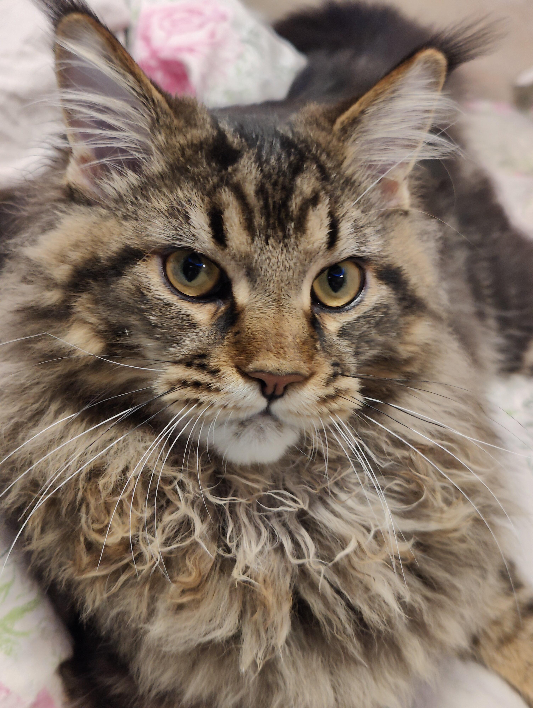
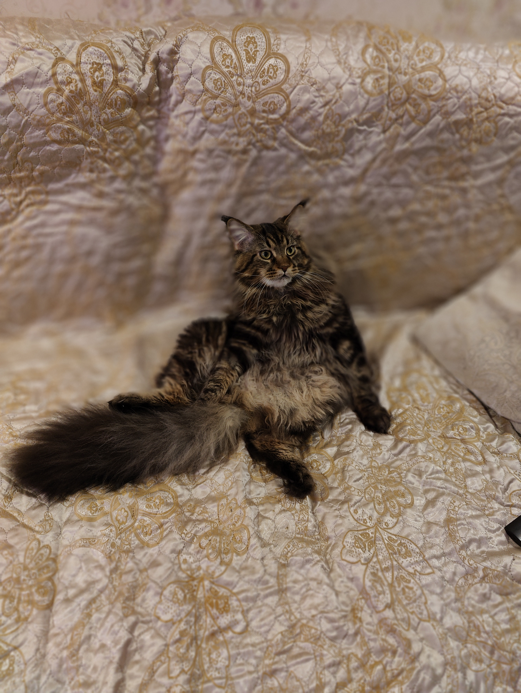

Всем привет
Немного моем коте
Здесь я коротко расскажу о своем коте
он еще маленький и ему нет еще и года но выглядит он так:

Имя ему дали Тима.
Возможно по тому, что это имя озвучила моя 5ти летняя дочь
когда она взяла в руки маленький, пушистый комочек, который она бережно держала на руках всю дорогу домой.

Но и тогда, в свои 5 недель, он уже был настоящий охотник :-).

Порода Мейн-кун
Мейн-кун – аборигенная порода американских кошек, характеризующаяся крупными размерами и внушительной массой
тела. Представители породы – это надежные друзья и компаньоны, способные быстро завоевать любовь всей семьи.

Краткая информация
- Название породы: Мейн-кун
- Страна происхождения: США
- Время зарождения породы: XIX век
- Рост (высота в холке): 25-41 см
- Продолжительность жизни: 12-15 лет


Основные моменты
- Мейн-куны – великаны кошачьего мира. Вес взрослой особи мужского пола может достигать от 7 до 12 кг, кошки – от 4 до 7,5 кг.
- Хозяева мейн-кунов любят называть своих питомцев просто кунами.
- Невзирая на наличие богатой «шубки», представители этой породы не нуждаются в профессиональном груминге и способны обойтись домашним вычесыванием.
- Куны не флегматики и с удовольствием поддержат любую игру, если она затевается с утра или под вечер. А вот в дневное время животные предпочитают мирно подремать.
- Мейн-куны по праву считаются одной из лучших семейных пород. Они одинаково легко приживаются и в домах, и квартирах и не объявляют войну другим представителям фауны, вынужденным делить с ними общую территорию.
- С возрастом представители этой породы «отращивают» невероятное чувство собственного достоинства, самозабвенно предаваясь царственному возлежанию на всех свободных (а иногда и занятых) горизонтальных поверхностях в неожиданных позах.
